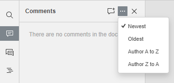

Komentarisanje PDF-ova
PDF Editor vam omogućava dosledan rad u timu: deljenje fajlova i foldera, komunikaciju direkno u editoru.
U PDF Editor možete ostavljati komentare na sadržaj PDF-a bez njegovog uređivanja. Za razliku od chat poruka u četu, komentari ostaju dok se ne obrišu.
Ostavljanje komentara i odgovaranje
Da biste ostavili komentar,
- izaberite odlomak teksta gde mislite da postoji greška ili problem,
-
pređite na Comment karticu na gornjoj traci i kliknite Comment dugme, ili
koristite ikonu na levoj traci i otvorite Comments panel i kliknite Dodajte komentar dugme u gornjoj traci sa alatkama panela, ili
kliknite desnim tasterom miša na izabrani odlomak teksta i izaberite opciju Dodaj komentar iz kontekstnog menija, - unesite potrebn tekst,
- kliknite Add dugme.
Komentar će biti prikazan u Comments panelu sa leve strane. Ostali korisnici mogu odgovarati, postavljati pitanja ili potvrditi da je zadatak izvršen. Za ovu svrhu, kliknite Add Reply link postavljen ispod komentara, unesite svoj odgovor u polje za unos i pritisnite Reply dugme.
Onemogućavanje prikaza komentara
Odlomak teksta na koji ste komentarisali biće istaknut u PDF-u. Da biste videli komentar, samo kliknite unutar odlomka. Da biste onemogućili ovu funkciju,
- kliknite File karticu na vrhu alatne trake,
- izaberite Advanced Settings opciju,
-
uklonite oznaku iz Prikaži komentare u tekstu polja.
Ista opcija se može naći i na kartici Komentar.
- kliknite Apply dugme.
Sada će komentarisani odlomci biti istaknuti samo ako kliknete na ikonu.
Upravljanje komentarima
Dodatim komentarima možete upravljati pomoću ikona u balončiću za komentare ili na panelu Komentari sa leve strane:
-
sortirajte dodate komentare klikom na ikonu:
- po datumu: Najnovije ili Najstarije. Ovo je podrazumevani redosled sortiranja.
-
po autoru: Autor od A do Z ili Autor od Z do A.

- uredite trenutno izabrani komentar klikom na ikonu,
- obrišite trenutno izabrani komentar klikom na ikonu,
- zatvorite trenutno izabranu diskusiju klikom na ikona ako je zadatak ili problem koji ste naveli u komentaru rešen, nakon toga, diskusija koju ste otvorili sa svojim komentarom dobija status rešeno. Da biste je ponovo otvorili, kliknite na ikonu .
Dodavanje oznaka
Možete dodati oznake u komentarima, ali samo u komentarima vezanim za delove teksta, ne za ceo PDF.
Kada unosite komentare, možete koristiti funkciju pominjanja, koja vam omogućava da privučete nečiju pažnju na komentar i pošaljete obaveštenje pomenutom korisniku putem imejla i Talk-a.
Da dodate oznaku,
- Unesite znak „+“ ili „@“ bilo gde u tekstu komentara i otvoriće se lista korisnika portala. Da biste pojednostavili proces pretrage, možete početi da kucate ime u polje za komentar - lista korisnika će se menjati dok kucate.
- Izaberite potrebnu osobu sa liste i kliknite na dugme Dodaj. Ako datoteka još nije deljena sa pomenutim korisnikom, otvoriće se prozor Podešavanja deljenja. Tip pristupa Samo za čitanje je podrazumevano izabran. Promenite ga ako je potrebno.
- Sačuvajte izmene ako ih ima klikom na dugme Sačuvaj. Ako nema izmena, zatvorite prozor Podešavanja deljenja.
Pomenuti korisnik će dobiti obaveštenje putem e-pošte da je pomenut u komentaru. Ako je datoteka deljena, korisnik će takođe dobiti odgovarajuće obaveštenje.
Uklanjanje komentara
Da uklonite komentare,
- otvorite Komentari levi panel,
- pronađite potreban komentar i kliknite na dugme.
Da biste zatvorili panel sa komentarima, kliknite na ikona na levoj bočnoj traci još jednom.